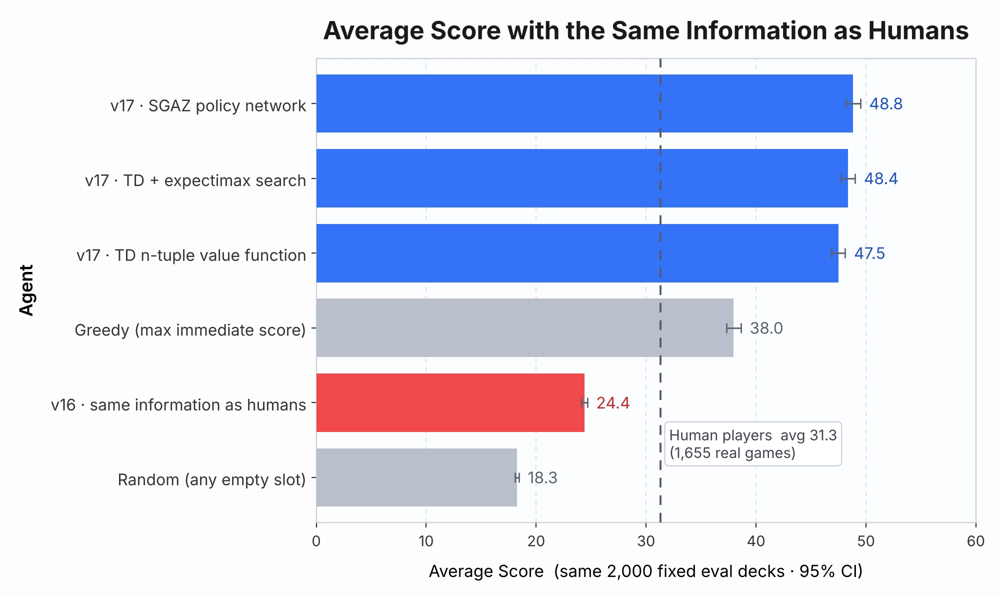
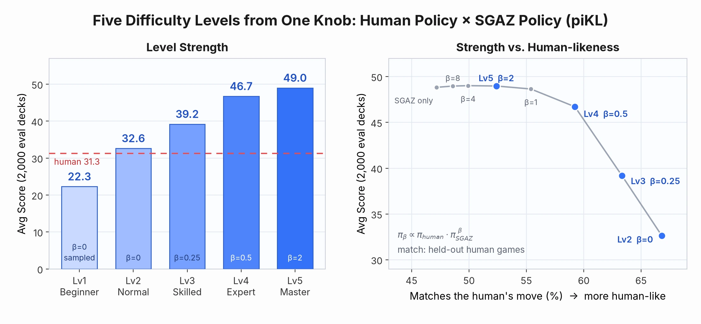
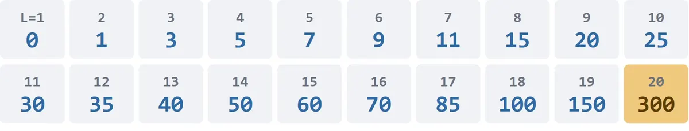
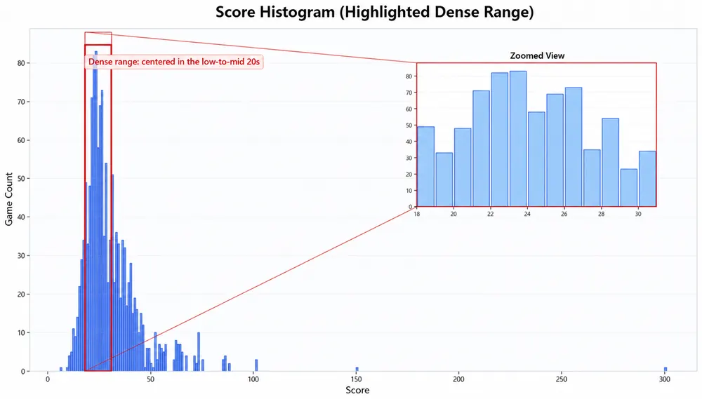
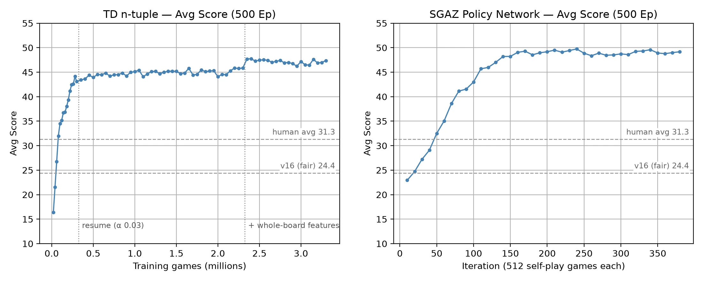
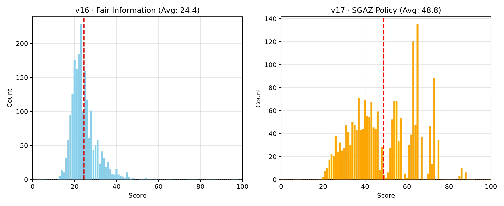

exp/01 · 강화학습
STREAMS 에이전트
사람처럼 판단하는 보드게임 AI를 만들고, 그 결과를 다시 검증하기까지.





01 · 프로젝트 개요
사람과 직접 대결하는 보드게임 AI
스트림스는 1~30 숫자 카드 40장(11~20은 두 장씩) 중 20장이 한 장씩 나오고, 매 턴 받은 카드를 20칸 보드의 빈칸에 놓는 보드게임입니다. 왼쪽부터 같거나 커지는 구간이 길수록 점수가 크게 오릅니다. 강화학습에 사람 플레이 모방학습을 더한 에이전트를 만들고, 사람이 그 에이전트와 직접 겨루는 PVE 게임으로 배포했습니다.
2025년 9월 캡스톤디자인으로 시작해 단과대학 캡스톤 경영대회 우수상을 받았습니다. 캡스톤이 끝난 뒤에는 혼자 그 결과를 다시 검증해 새 에이전트와 Unity 6 버전을 만들었고, 연구는 지금도 이어 가고 있습니다.
- Timeline
- 캡스톤 2025.09 – 2026 1학기
개인 연구 2026.09 – 현재 - Team
- 캡스톤 2인 팀 (에이전트 담당)
이후 혼자 전부 진행 - Role
- 에이전트 설계 · 학습 · 재검증
Unity 재구축 · 서비스 운영 - Stack
- PyTorch · D3QN · 모방학습(BC) · TD n-tuple · Gumbel AlphaZero · piKL · Unity 6 WebGL · Cloudflare Workers · D1
02 · 개발 계기
정말 사람처럼 보드게임을 하는 에이전트를 만들 수 있을까
평소 게임을 즐기면서 게임을 직접 컴퓨터로 구현해 보고 싶었고, 마침 AI를 공부하고 있었습니다. 그래서 캡스톤디자인 주제를 정할 때 가장 먼저 떠올린 것이 게임과 AI를 결합한 연구였습니다.
목표는 하나였습니다. 규칙을 외운 기계가 아니라, 사람처럼 전략을 세우고 상황에 따라 판단하며 보드게임을 플레이하는 에이전트를 만드는 것.
스트림스를 고른 이유도 분명했습니다. 한 판이 빨리 끝나 학습과 데이터 수집에 유리하고, 게임 자체가 단순해 직접 구현하기 편했습니다.
규칙을 다 적을 수 없다면, 스스로 배우게 하자
규칙은 단순해도 경우의 수는 굉장히 많습니다. 점수는 구간 길이에 따라 초선형으로 커져서, 카드 한 장의 배치가 판 전체를 좌우합니다. 예외 상황도 너무 많아 "이럴 땐 이렇게"라는 규칙을 일일이 지정하는 방식은 처음부터 불가능했습니다.
그래서 예외를 지정하지 않아도 에이전트가 스스로 규칙과 상황별 노하우를 익히는 강화학습을 베이스로 삼았습니다.

03 · 내가 한 일
캡스톤에서는 에이전트를, 지금은 전부를
캡스톤은 2인 팀으로 진행했고, 저는 에이전트 개발을, 팀원은 사람 플레이 데이터 분석을 맡았습니다. 캡스톤이 끝난 뒤에는 재검증부터 재학습, 게임 재구축과 운영, 후속 연구까지 혼자 진행하고 있습니다.
캡스톤 2인 팀 · 2025.09 – 2026 1학기
- 에이전트 개발91차원 상태를 설계하고, PyTorch로 D3QN 신경망과 모방학습(BC) 사전학습을 구현했습니다. 두 가지 승리 전략을 나눠 실험해 에이전트의 전략을 정했습니다.
- 모방학습 데이터 선별사람 플레이 중 40점 이상의 고득점 플레이만 골라 추가 모방학습에 썼습니다.
- 플레이 데이터 분석 팀원사람 플레이의 점수 분포와 특성 상관 분석은 팀원이 맡았습니다.
캡스톤 이후 혼자 · 2026.09 – 현재
- 재검증실제 게임에서 이상한 수가 나오는 원인을 추적해 정보 누수와 버그를 찾고, 사람과 같은 정보·고정 평가 덱 2,000판으로 기준을 다시 세웠습니다.
- v17 재학습같은 조건에서 TD n-tuple과 Gumbel AlphaZero 정책망을 학습하고, 사람 모방 정책과 섞어 난이도 5단계를 만들었습니다.
- Unity 6 재구축 · 운영덱과 AI를 서버에만 두는 구조로 게임을 다시 만들고, 친구 대전과 실시간 통계까지 배포해 운영하고 있습니다.
- 데이터 수집 · 후속 연구턴별 기록과 행동 기록을 모으며, 실력별 사람 모델을 다음 연구로 준비하고 있습니다.
04 · 개발 과정
학습시키고, 배포하고, 사람의 플레이로 다시 학습했습니다
-
STEP 01
이기는 전략은 두 가지, 에이전트에게 맞는 것은 하나
두 전략으로 에이전트를 나눠 실험한 끝에, 강화학습은 상황마다 학습한 최선의 수를 두기 때문에 어느 정도의 저점이 이미 보장된다는 점에 주목했습니다. 그렇다면 에이전트에게 어울리는 것은 고득점을 노리는 쪽이라고 보고 Fullstream을 택했습니다.
FULLSTREAM채택보드의 모든 칸(1~20)을 끊기지 않는 하나의 구간으로 잇는 전략. 고득점에 유리하지만 실패하면 점수가 크게 떨어집니다.
DUMMYSPACE일부 칸을 버리는 공간으로 정해 두고 원하지 않는 숫자를 그곳에 빼는 전략. 점수는 안정적이지만 변동 폭이 좁아 고득점이 어렵습니다.
-
STEP 02
강화학습에 모방학습을 더하다
강화학습만으로는 성능이 만족스럽지 않았습니다. 91차원 상태를 입력받는 D3QN(Dueling Double DQN)을 PyTorch로 만들고, 사람의 플레이를 먼저 따라 배우는 BC 사전학습 단계를 더해 앙상블했습니다.

91차원 입력을 받는 Dueling Network 구조와 모방학습(BC) 사전학습 단계. -
STEP 03
먼저 배포해서 사람의 플레이를 모으다
모방학습에는 실제 사람의 플레이가 필요했습니다. 그래서 1차로 사람과 에이전트가 대결하는 PVE 웹게임을 배포해 플레이를 모았습니다. 캡스톤 기간이 짧아 수집 도중에 모델을 업데이트해야 했고, 발표 시점까지 1,346판이 모였습니다. 이후에도 기록이 쌓여 1,655판이 되었습니다.
캡스톤 때 배포한 1차 웹게임(튜토리얼 화면). 사람과 AI가 같은 카드를 받아 각자의 보드에 둡니다. -
STEP 04
사람 데이터가 전략 선택을 검증하다
팀원이 모은 플레이를 분석해 보니, 사람들은 주로 Dummyspace를 쓰지만 평균 점수가 더 높은 쪽은 Fullstream이었습니다. 점수와 가장 강하게 상관된 특성도 최장 구간 길이(r=0.863)였습니다. 에이전트의 전략 선택이 데이터로 검증된 순간이었습니다.

수집한 사람 플레이 점수 분포. 대부분 20점대 초중반에 모여 있습니다. 
점수와 가장 강한 상관을 보인 특성은 최장 구간 길이(r=0.863)였습니다. -
STEP 05
잘한 플레이만 골라 다시 배우게 하다
모방학습에는 아무 데이터나 쓰지 않았습니다. 대부분의 사람 플레이가 20점대에 머물렀기 때문에, 40점 이상의 고득점 플레이만 골라 추가 모방학습을 진행했습니다.
05 · 결과
평균 71.5점 D3QN 에이전트와, 사람과 대결하는 PVE 웹게임
200k 에피소드를 학습하며 평균 점수가 32점에서 71점으로 안정적으로 수렴했습니다. 500판 평균 70점 이상, 판마다 평균 15칸 이상을 하나의 구간으로 이었고, 학습 전후 분포를 보면 저득점 꼬리가 사라지고 점수가 조밀해졌습니다. 이 에이전트를 PVE 웹게임에 올려 누구나 대결할 수 있게 했습니다.

이 71.5점은 캡스톤 당시의 학습 환경 기준입니다. 이후 다시 검증하면서, 이 에이전트가 둘 칸을 고를 때 앞으로 나올 카드를 보고 있었다는 것을 직접 찾아냈습니다. 07에서 이어집니다 ↓
06 · 성과
직접 모은 사람 플레이 1,346판, 그리고 우수상

07 · 지금까지 하고 있는 일
결과를 다시 의심하고, 같은 조건에서 다시 만들고 있습니다
이해할 수 없는 수를 따라가 보니, 정보 누수가 있었습니다
웹게임을 운영하며 유저들에게서, 그리고 직접 플레이하면서 같은 문제가 보였습니다. 실제 게임의 점수가 학습 결과와 너무 달랐고, 에이전트가 가끔 이해할 수 없는 수를 둬서 스스로 보드를 망쳤습니다. 사람이라면 절대 두지 않을 자리에 10번대 숫자를 두는 식이었습니다.
학습 환경과 실제 게임에서 점수도, 두는 방식도 이렇게 다르다면 두 환경 사이에 무언가 다른 것이 있다는 뜻입니다. 그래서 에이전트가 둘 수 있는 "안전한 칸"을 미리 걸러 주던 확률 마스크(get_prob_mask)를 가장 먼저 의심했고, 캡스톤 버전(v16)을 처음부터 다시 점검했습니다.
- 앞으로 나올 카드를 보고 있었습니다확률 마스크가
deck[ci+1:], 즉 앞으로 나올 카드 목록으로 칸을 고르고 있었습니다. 사람은 알 수 없는 정보이고, 덱 20장을 알면 정렬만으로 항상 300점이 나옵니다. - 부등호 하나가 같은 숫자를 막고 있었습니다점수 규칙은 같은 숫자도 이어지는 것으로 보는데(
<=), 마스크는 막고 있었습니다(<). 11~20은 두 장씩이라 덱의 97%에 같은 숫자 쌍이 들어 있고, 대부분의 판에서 3턴 무렵 안전한 칸이 사라졌습니다. 그 뒤로 에이전트는 학습하지 못한 상황에서 수를 뒀고, 빈 보드에 18을 10번 칸에 두는 수가 여기서 나왔습니다. - 데이터를 모으던 기간, 서버 AI는 무작위로 두고 있었습니다당시 배포 서버에 PyTorch가 없어 AI가 모델 대신 무작위로 두고 있었습니다. 기록된 AI의 수 33,100개를 턴별로 복원해 모델의 선택과 비교해서 확인했고, 이 기간의 AI 판은 학습 데이터에서 뺐습니다.
- 적은 판 수로 잰 점수는 크게 흔들렸습니다학습 로그의 평균 58.5점은 몇 판만 평가해 300점 판이 섞인 값이었고, 같은 덱 2,000판으로 다시 재면 47점(중앙값 33점)이었습니다.
보드와 현재 카드만 보도록 조건을 맞추자 v16의 평균은 24.4점이었습니다. 사람 평균 31.3점보다도, 당장 점수만 보는 greedy(38.0점)보다도 낮았습니다. 모델이 게임 실력을 배운 게 아니라 덱 정보에 기대고 있었던 것입니다.
그래서 기준부터 다시 정했습니다. 에이전트는 사람처럼 보드와 현재 카드만 보고, 아직 안 나온 카드는 40장에서 보드 위 카드를 빼서 계산합니다. 모든 에이전트는 같은 고정 평가 덱 2,000판으로 비교합니다.
사람과 같은 정보로, 처음부터 다시 학습했습니다
보드와 현재 카드만 보는 124차원 입력으로 v17을 새로 학습했습니다. 먼저 afterstate TD와 n-tuple 가치 함수로 47.5점(expectimax 탐색을 더해 48.4점)을 냈습니다.
DQN 계열은 정확한 시뮬레이터가 있다는 이 게임의 장점을 살리지 못하고, 다음 카드 운 때문에 학습이 크게 흔들렸습니다. 그래서 남은 카드로 다음 카드의 확률을 정확히 계산해 쓰는 Stochastic Gumbel AlphaZero(SGAZ)로 넘어갔습니다. 가치 타깃을 세 번 바꾼 끝에(20점 → 40점 → 48.6점) 학습이 자리를 잡았고, 정책망 하나로 48.8점에 도달했습니다. 같은 조건에서 20점 미만으로 끝난 판이 v16은 339판, v17은 한 판도 없었습니다.



강함과 사람다움 사이에서, 난이도 5단계
실제 게임에서는 사람 플레이를 모방한 정책에 SGAZ 정책을 β만큼 섞어(piKL 방식), 입문부터 마스터까지 난이도 5단계를 만들었습니다. β가 커질수록 강해지고, 사람과 같은 수를 두는 비율은 낮아집니다. Lv1은 사람 평균보다 약하고, Lv2부터 사람 평균을 넘습니다.
Unity 6로 다시 만들어, 지금도 서비스하고 있습니다
게임은 Unity 6로 다시 만들었습니다. 덱과 AI는 Cloudflare Worker 서버에만 두고 카드를 한 장씩 보내서, 사람도 AI도 덱을 미리 볼 수 없습니다. 도트 아트 화면, 튜토리얼, 8비트 효과음을 넣었고, 방 코드로 2~8명이 같은 카드를 받아 겨루는 친구 대전(Durable Object와 WebSocket, 턴 제한 20초, 나간 자리는 AI가 이어 둠)까지 WebGL로 배포했습니다.
플레이 기록은 D1에 쌓입니다. 턴마다 놓은 칸과 생각한 시간을 남기고, 칸 위에서 망설인 시간·판 포기·재대전 같은 행동은 따로 기록합니다. 학습에 넣을 판은 품질 규칙(테스트 판, 다시 둔 턴이 있는 판 제외)으로 거르고, 집계는 공개 통계 페이지에 실시간으로 올라갑니다.
약한 AI가 아니라, 그 실력의 사람처럼 두는 AI
v17을 시작할 때 세운 계획은 네 단계였고, 세 단계를 마쳤습니다. 남은 것은 Maia 방식의 사람 모델입니다. 지금 사람 모방 정책은 예전 기록 1,655판으로 학습해 사람의 수를 66.8% 맞히는데, 가장 강한 SGAZ 정책은 47.2%에 그칩니다. 강한 에이전트일수록 사람처럼 두지 않는다는 뜻입니다.
그래서 실력 값을 입력으로 받는 사람 모델(Maia-2 방식)을 만들어, 난이도마다 그 실력의 사람처럼 두는 AI를 쓰려고 합니다. 실력은 카드 운이 섞이는 점수 대신, 한 수마다 잃은 기대 점수로 재는 방향을 보고 있습니다. 약 49점에서 멈춘 성능과 2.3점 차이뿐인 4·5단계도 함께 풀어야 할 과제입니다. 아직 서비스 데이터가 많지 않아, 지금은 데이터를 모으는 단계입니다.
n-tuple 가치 함수와 보드 전체 특징.
확률 노드의 기대값을 정확히 쓰는 Gumbel AlphaZero.
사람 모방 정책과 SGAZ를 β로 섞어 서비스에 적용.
Maia-2 방식. 실력 값을 넣으면 그 실력의 사람이 둘 수를 예측.
08 · 인사이트
숫자는 그 숫자가 나온 조건과 함께 봅니다
상을 받은 71.5점은 사람이 볼 수 없는 정보 위에서 나온 숫자였고, 적은 판 수로 잰 점수는 10점 넘게 흔들렸습니다. 그 뒤로는 성능을 보기 전에 모델이 무엇을 보고 있는지, 비교 조건과 평가 판 수가 같은지부터 확인합니다.
시뮬레이션에서는 잘 두던 에이전트가 실제 게임에서는 사람이라면 절대 두지 않을 자리에 10번대 숫자를 뒀습니다. 마스크의 부등호 하나, 서버에 없던 라이브러리 하나가 체감 성능을 바꿨습니다. 성능을 끌어올리려면 어떤 환경의 영향이 가장 큰지부터 알아야 합니다.
"학습 결과와 점수가 너무 다르다", "가끔 이해할 수 없는 수로 스스로 보드를 망친다"는 피드백이 재검증의 출발점이었습니다. 지금도 유저의 플레이 기록이 다음 학습으로 이어집니다.